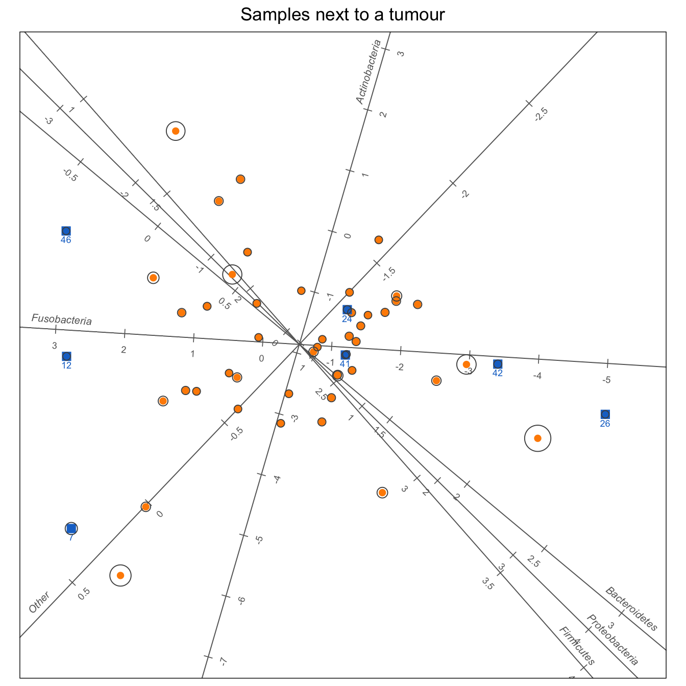

Using PCA biplots to explore unusual observations in gut microbiome data and identify the bacteria that distinguish them.
Author
Raeesa
Published
November 10, 2026
The data
In a study of the gut microbiome and colorectal cancer, Nakatsu et al. (2015) collected bacterial counts from tissue samples. The data considered here contain counts for six bacterial groups: Firmicutes, Proteobacteria, Bacteroidetes, Fusobacteria, Actinobacteria, and a sixth category combining all remaining bacteria.
Two subsets of the data are looked at: 61 samples from healthy individuals and 52 samples taken from tissue adjacent to tumours in patients with colorectal cancer.
Van Heerden et al. (2026) recently proposed a statistical model for identifying unusual observations in microbiome count data. Their approach distinguishes between typical samples and samples that exhibit considerably more variation. When applied to these data, the model identifies 11 unusual samples in the healthy group and 7 in the cancer group.
This gives a useful starting point, but it also raises an interesting question.
What makes these samples unusual?
The model identifies observations that differ from the rest, but it is less obvious what makes them different. Are certain bacterial groups responsible? Do the unusual samples share similar characteristics, or are they unusual for different reasons?
This is where a PCA biplot can be useful. Rather than simply identifying unusual samples, we can explore their positions relative to the other observations and see how these relate to the bacterial groups.
Constructing the biplots
Before applying PCA, we need to account for the nature of the data. Bacterial counts depend on the total number of reads in a sample, so comparing raw counts can be misleading. It is of more interest to use the relative abundance of the bacterial groups.
To do this, a centred log-ratio (CLR) transformation is applied, adding a pseudo-count of 0.5 beforehand to accommodate zero counts.
There is also a small but important decision in how the biplots are constructed.
Rather than fitting PCA to all the samples, we use only those classified as typical by the model. The unusual samples are then projected onto the resulting biplot. This means that the unusual observations do not influence the principal components, allowing to see where they fall relative to the structure of the typical samples.
Finally, a ring around each point is drawn. The model gives each sample a probability of being typical, and it classifies a sample as unusual when this probability is 0.5 or less. The ring shows how near that probability is to 0.5: the nearer it is, the larger the ring. A large ring therefore marks a sample that the model is not sure about, while a point with no visible ring is one where the model is confident.
Show the R code
library(CDM) # the model and the datalibrary(biplotEZ) # development version, draws with ggplot2library(ggplot2)# Centred log-ratio. The pseudo-count removes zeros.clr <-function(Y, pseudo =0.5) { L <-log(Y + pseudo) L -rowMeans(L)}cdm_biplot <-function(Y, title) { Y <-as.matrix(Y)storage.mode(Y) <-"integer"# Fit the model. A sample is unusual if P(typical) is 0.5 or less. fit <-CDM.fit(Y) post <- fit$Probability.Posterior[, 1] unusual <- post <=0.5 Z <-clr(Y)rownames(Z) <-seq_len(nrow(Z))# Typical samples set the axes. Unusual samples are added afterwards. bp <-biplot(Z[!unusual, , drop =FALSE], Title = title) |>PCA() |>samples(col ="darkorange", pch =16) |>axes(col ="grey40") |>interpolate(newdata = Z[unusual, , drop =FALSE]) |>newsamples(col ="dodgerblue3", pch =15, cex =1.3, label =TRUE)# Doubt: 0 = the model is sure, 1 = P(typical) is 0.5 scores <-rbind(bp$Z, bp$Znew) ord <-c(which(!unusual), which(unusual)) rings <-data.frame(x = scores[, 1], y = scores[, 2],doubt =1-2*abs(post[ord] -0.5))gg_biplot(bp, draw =FALSE,xlim =range(scores[, 1]) *1.2,ylim =range(scores[, 2]) *1.2)$gg +geom_point(data = rings, aes(x = x, y = y), inherit.aes =FALSE,shape =1, colour ="grey30", size =2.2+8* rings$doubt)}
PCA biplot of the 61 healthy samples. Orange circles represent typical samples, while blue squares identify the 11 unusual samples. Larger rings indicate greater uncertainty in the model’s classification.
Show the R code
data("Carcinoma_Subset")cdm_biplot(Carcinoma_Subset, "Samples next to a tumour")

PCA biplot of the 52 samples taken from tissue adjacent to tumours. The 7 unusual samples are shown as blue squares.
What can we see?
In each biplot, the points represent tissue samples and the axes represent bacterial groups. The tick marks are on the log-ratio scale, and a sample can be projected onto an axis to get an indication of its value for that bacterial group.
The first thing that stands out is the position of the unusual samples. In both biplots, most of the blue squares fall towards the edges of the orange point cloud, or beyond it.
This is reassuring, since the PCA was constructed using only the typical samples. The visual separation is broadly consistent with the classifications produced by the model.
The first two principal components account for approximately 82% of the variation among the typical healthy samples and 73% among the typical cancer samples. Therefore a substantial proportion of the variation can be retained in these two-dimensional displays.
Healthy samples: the role of Proteobacteria
In the healthy samples, the unusual observations are not scattered randomly around the typical samples. Most appear on the side of the biplot associated with higher relative abundances of Proteobacteria, with three samples lying particularly far in this direction.
The widest spread of the samples runs along the Fusobacteria axis. Fusobacteria is absent from 14 of the 61 healthy samples, and the difference between samples with and without this group explains more than half of that spread.
Although Fusobacteria contributes strongly to the overall structure of the biplot, Proteobacteria appears to be more useful for understanding why several of the healthy samples were classified as unusual.
Cancer samples: the role of Fusobacteria
The picture is somewhat different for the cancer samples.
Here, the unusual observations tend to lie at opposite ends of the Fusobacteria axis. Three samples have particularly high relative abundances of Fusobacteria, while two have particularly low relative abundances.
What is particularly useful here is that the unusual samples are not all unusual in the same direction. Some have much higher relative abundances, while others have much lower relative abundances.
The biplot makes this distinction immediately visible.
Some thoughts
What I like about this example is how the statistical model and the biplots complement each other.
The model provides a principled way of identifying unusual samples. The biplots then help us understand what distinguishes those samples from the rest.
For the healthy samples, Proteobacteria appears to play an important role in separating several unusual observations. In the cancer samples, Fusobacteria is more prominent, with unusual samples occurring at both high and low relative abundances.
There is also a second benefit. By showing how the unusual samples are positioned relative to the typical samples, the biplots offer a way to explore whether the model’s assumptions are reasonable.
This is a good example of why I find biplots useful alongside formal statistical methods. They do not replace the model, but they can reveal patterns that are difficult to appreciate from the model output alone.
References
Nakatsu, G. et al. (2015). Gut mucosal microbiome across stages of colorectal carcinogenesis. Nature Communications, 6, 8727.
Van Heerden, O., Bekker, A., Makgai, S., Otto, A. and Punzo, A. (2026). A contaminated model for overdispersed multinomial microbiome count data. arXiv:2606.02199.
NoteReproduce this analysis
The full source code is available in the website repository.
The analysis uses the development version of biplotEZ and the CDM package, which also contains the data.